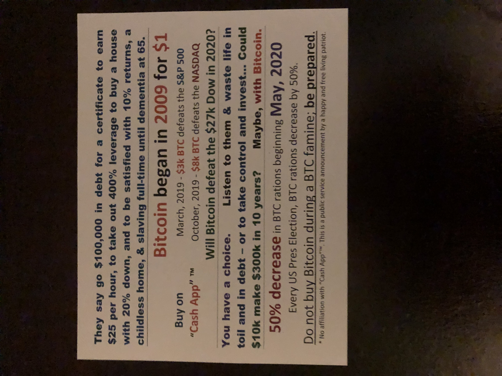

Our Work

Midnight Discovery's mission is to foster a relationship between modern internet technologies and us. We strive to bolster the average person's life and income by exposing them to cutting-edge and future proof concepts and career paths. Take one of our success stories for example:


In 2015, we began the experiment of taking a young person in a difficult situation, and getting them into coding. The idea was that if we could prevent, or reduce, the years spent working in service, retail, or manual labor, then we could cost-effectively accelerate happiness within society.
We found one such individual, Cam, who was living in-between two homes. One infested with rodents and wine bottles, and another with a struggling father who took to partying and bad relationships, 100% drained from each day’s work: and people in these environments are not too uncommon.
First we began by buying him a chrome book, and motivating him to code. Then we paid him $100 for completing assignments. $100 is a lot to a kid who has no source of income, and whose parents cannot spare $20.
It worked. He began to take to HTML and felt proud of his accomplishments. By 16 he was performing useful work, creating webpages, mastering Linux, and solving coding challenges in Bitcoin. He was given Benjamin Franklin's Autobiography, The Way to Wealth, Thomas Paine's Rights of Man, the Four Hour Workweek, and Mastering Bitcoin. He never read them. He was also issued a dry erase board with a calendar to keep track of schedules, some notepads, etc. that were also rarely used, but we stuck with him.
At that time, we encouraged him to open his own website, to start a YouTube channel, and to begin networking with programmers and business people. We do not want to be the only source of feedback; we want each one to be independent. Through these interactions and the process of making sales, he learned that insulting people and putting down their ideas was not an acceptable way to behave outside his household. He learned to speak using clear language, and to avoid phrases such as, "I'll get it done," and instead to say, "I'll get the website uploaded to Github by 5pm Monday."
However, he came with his own strengths. He naturally excelled in sales and excitement. He took a keen interest in his community, and participated in many social activities of his surroundings. But like the books, he refused to commit to the Youtube channel and preferred socializing without any ambition instead of for business. Even to this day he spends his precious free-time reading the latest social drama, instead of acquiring mentors, studying new businesses, and preparing for his next stage of life: work and money getting.
It was at this time that the government began selling him $100,000 of debt in exchange for a worthless paper sheet, and when asked he said, “But I can’t earn money without a degree,” and it is this intentional handicapping of children that makes them feel so trapped as to not question throwing away the entirety of their future. It was here that we introduced Lambda School.
At Lambda School one can pay $15,000 for an education in programming, become classically ‘finished’ and refined, and receive a commitment from the counselors to help find jobs paying $50,000 or more after one or two years of training, depending on whether you go part-time or full. And best of all, he had already acquired a significant amount of the technical skills necessary to excel. He was not intimidated.
While the system says massive debt is meant for everyone, like a bad birthday cake you get at 18, through individual conversations with counselors and trusted teachers, he got the approval he felt he needed; he presented them with the evidence of Lambda’s success, the Tweets, the job offers, the money and the cost. One valiant instructor, a friend, exclaimed with earnest that it was a no brainer, and that he should seize the opportunity.
But our program is a step by step process. Step 1 was introducing him into the development of a valuable skill at a young age, where small sums of money purchase large amounts of motivation, where time is free and expectations minimal. Step 2 is designing a basic start at life, while dodging catastrophe. For him, this means coding, but we also work in finance, media, legal, and medicine – and generally speaking all business under the sun.
Moving on, the government’s program aggressively sought to cripple his mind and focus. Instead of exposing him to healthy forms of recreation and expression, such as hiking, music, art, or writing (hobbies that build in strength over time), he would fit in by joining the crowds who stood on street corners yelling, or by taking substances at night. Eventually, prioritizing political events and partying over business lead him to a trickling of leads, and a need for emergency funding; thus he entered the terrible world of retail labor, working 30 hours a week, often at 6 am, developing nothing.
His car, bought for him by an uncle, broke down monthly, but it was the best they could afford. Even after the long hours in retail, insurance and gas took up most of his paycheck and repair bills the rest. He was becoming trapped, with no easy way out.
While he was programming he was earning $30 to $50 an hour. In retail, it was 5 bucks after tax. With programming he had to balance his own schedule, but in retail that ‘burden’ was taken from him. Programming is difficult after nights of partying, but in retail few care so long as one maintains two legs for standing. Yet, eventually the difficult, higher paying task won out, after months of working 30 hour weeks only to realize he was left with nothing.
And it should be noted the withdrawal that comes from breaking bad habits is tough of children, too tough. Children do not comprehend what habit forming substances can do to the mind when taken from the body, and it should be a situation monitored with great concern and with intense commiseration with nature, if you can.
Yet he survived, and in his final year of high school he is back to making YouTube videos yet again, paid $30 for each by us. He has yet to express a proper love and marry his guitar, but we hope that too will change. And those books we thought were lost, well they too were found. The Four Hour Workweek inspired him during his breaks in-between shifts, and Mastering Bitcoin challenged his programming knowledge.
He has grown more punctual, better at estimating timelines and scope, and has begun to prioritize contacts and relationships suitable for business. Not bad for a kid. With his renewed interest in achievement, and fearing what could befall him on the road, we advanced him funding for a vehicle, yet this too was a lesson.
At first, he simply said, ‘here is a car, it is $2,000, we can afford it, let’s get it.’ No, we said. We want value. For understanding assets, the cost of them, the value that they retain when purchased well, is a skill that is used time and again, when buying a house, a company, or a vehicle. It is natural to simply say, I want a thing (for anything is better than nothing), but if you have time one should consider at what price, what value, and for what will it be sold.
After an exhaustive nationwide search over several weeks, we came upon a $12,000 vehicle selling locally for just under $5,000. We bought it. We get repaid the cost, the profit is his. That is the difference between achievement and pity; at least we hope he begins to understand. Skill and effort rewards 10 fold what one gets when they beg.
And it so happens, knowingly, he will need to work while undergoing his technical training, and understanding his proclivities, we have set up a part-time position at a marijuana farm in Michigan, with an excellent mentor and a band of artistic and expressive comrades. Such a thing is only possible through our network of contacts and our unique skills. We offer counseling, money, business development, and specialized talent. Our contacts offer guidance, handholding, a steady paycheck, and mentorship. Without us, they have no business. Without them, we have nothing.
He is a programmer. He is not to be pitied. He has lots of energy, has negotiated contracts, has fought customers on pricing, has dabbled in marketing, and before long he will be launched in at the ground floor of a starting, growing business. And for those that do not know, it is these first employees who get promoted into management, offered ownership, and generally receive the lion’s share of gratitude in the coming years, and he will be exposed to this before the age of 20. ‘The hook up,’ some would call it, and one deserved.
But what is great about our process is affordability and scale. At each step of the way we make a minor investment, with an expectation of something great and wonderful to come.
An initial $500 (in equipment and awards) setup determination and aptitude. The next $5,000 spent were fair exchanges for functional products and useful work, all the while challenging their skill. We helped him to acquire new clients, taught marketing, taught mastery, but most of all taught self-reliance, communal problem solving, and perseverance through mental anguish.
It was not easy, but you are not doing anyone a favor when you fail to understand their reality.
This is capitalism, with a deep commitment to the social good. Developing youths quickly and cost-effectively, building them up to obtain high-tier jobs and ownership, helping them to accelerate the growth of large families, businesses, and millions of investments. Our aspirations are high, but in each child I fear we could succeed. Leading one to wonder, how much have we wasted?
Midnight Discovery is an extension of the American dream, the pursuit of happiness.
If you would like to hire Cam to build your website, help you go virtual, or setup a BTCPay server, you can do so at: www.camerondaycustomwebsites.net.
If there are other children whom you have met that you would like to recommend for our program, we accept all for whom we have time and funding, rich or poor alike, when suited. Our specialty is youths, ages 13 to 17, because we believe when one is maximally developed they can more easily care for a great many, exponentially amplifying their long life of future service.
If you would like to fund our mission, you can do so by contributing through PayPal or Bitcoin. It takes $5,000 to start with each child, and $20,000 to continue with them at 18.
Thank you so much for your time, and dream of a hope filled life. It is a gift we give to each other. Learn and prosper,
Midnight Discovery, a 501(c)3 non-profit corporation.

After thoughts; but for those curious at 18 it does not end.
We will assist Cam in aggressively investing his money, in Bitcoin, Tesla, and other new, world bettering, technologies, to manage his assets and maximize wealth, in aiding his brother, and helping his family. Our thought is that with an expected rate of success we can earn him $1 million in investments by age 25, all the while living as a young one should, and starting a family. That’s success, to us: taking someone with nothing, and transforming the world in just 10 years.
And while it may seem preposterous, it would not surprise me if by 35 Cam has raised 100 such children out from a similar circumstance in which he had found himself, for to give birth to so many is a wondrous feat. But how can one raise so many, you may ask? Well, George Washington, Benjamin Franklin, Thomas Jefferson, Thomas Paine, and so many others raised a nation, and in that regard, we got work to do. Let us get moving, you: me: everyone; the many: as one.
“She was the love of his youth, the inspiration of his manhood, a gallant courageous colonial and revolutionary patriot. Her descendants number many: notably leaders of men.”
Tennessee’s first five star mother: Sarah Hawkins.
First wife of Governor John Sevier (1746-1780).

Support Midnight Discovery by using Amazon Smile.
Mail donations to the 501(c)3 non-profit, payable to:
Midnight Discovery, Inc
2500 Sutherland Ave
Knoxville, TN 37919
Include your name, address, and email to receive a completed receipt, suitable for supporting your tax deduction.
Make a tax-deductible donation using Bitcoin!
Please claim these donations (in email) before they go public :D (Midnight.7300272@gmail.com).
Bitcoin (BTC coins)
bc1qce5n2pjc3qcrc77wmal2ysw3zjnxq92ywkk5ta
https://blockstream.info/address/bc1qce5n2pjc3qcrc77wmal2ysw3zjnxq92ywkk5ta
Get a website, go virtual, and accept Bitcoin with BTCPay: Cameron Day.
For tax, investment, and business services, contact: Keller Barnette, CPA.
Thank you, have a great day =D
If you are interested in get contact with us please sign up for the email list. If you would like to donate to foster our cause please click the button below to be taken to our donation page. We are a 501(c)3. There will also be a donation link for JFK tokens.
jfk1quqp7pespfmq2ufsem34xcdqrnmgm7xtcetlnza